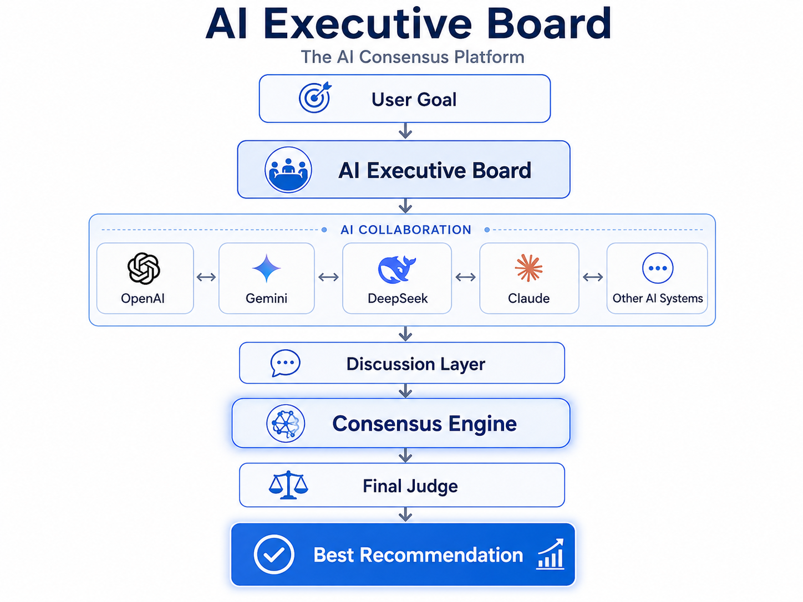

The Problem with Single AI Opinions
Most people ask only one AI.
This creates a single point of view with hidden bias and limited verification.
Different AI systems provide different answers.
Users need a better way to compare, challenge, and validate recommendations.
The solution is AI consensus.
AI Executive Board lets multiple AI systems discuss, verify, and produce stronger decisions.
How It Works
From one question to a collective recommendation.

Key Features
Multi-Agent Collaboration
Multiple AI agents work together instead of giving a single isolated answer.
Discussion Layer
AI agents can compare, challenge, and improve each other's reasoning.
Consensus Engine
Conflicts are analyzed and converted into a clearer final direction.
Final Judge
A final decision layer summarizes risks, confidence, and the best recommendation.
File Context
Upload documents, images, and project files for better decision support.
Open Source
MIT licensed and designed for transparent community development.
Roadmap
Stage 1
Open Source Foundation
Stage 2
Landing Page
Stage 3
Multi-Agent Discussion UI
Stage 4
AI Router and Consensus Engine
Stage 5
Public Alpha Release